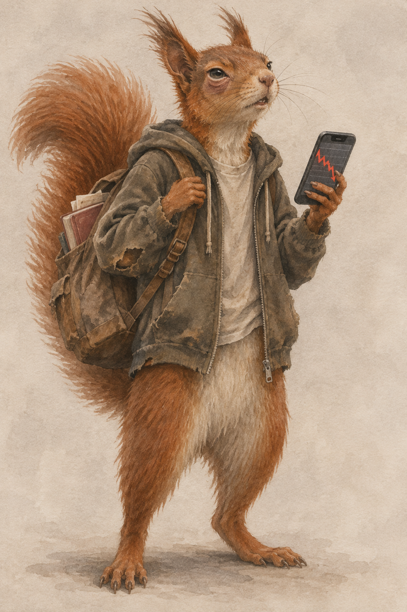
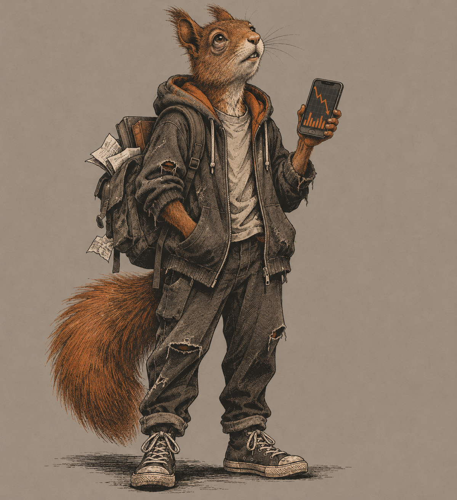
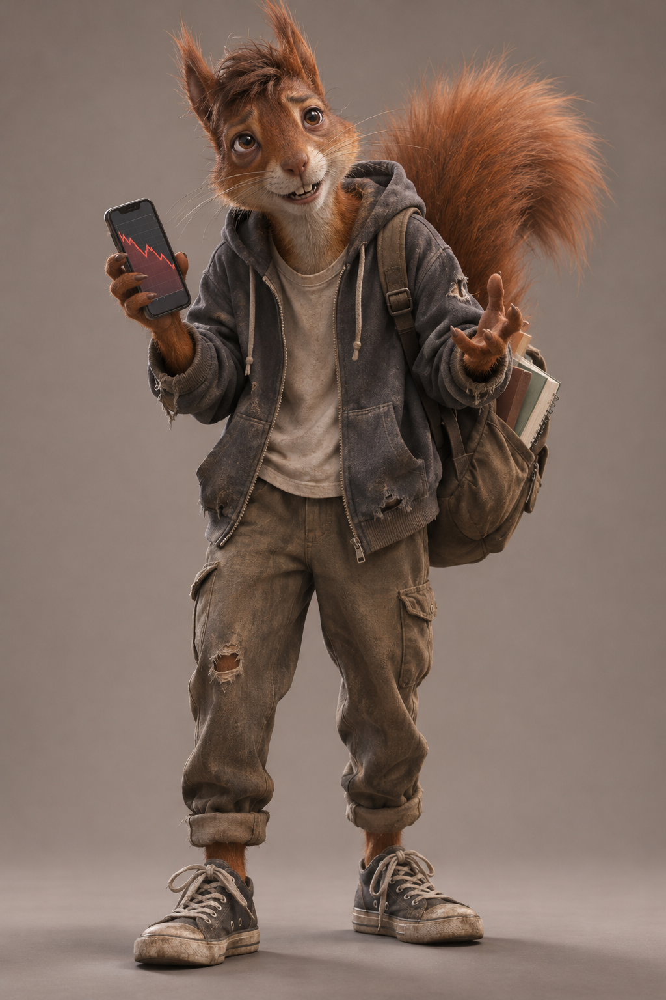
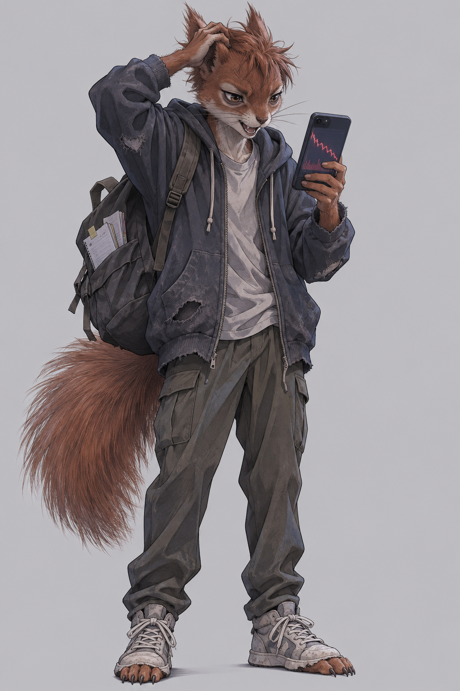

현실풍 그림체 시안 4종
다람쥐 캐릭터는 그대로 두고 그림체만 바꿨습니다. 젊은 남성, 후드, 휴대폰으로 차트를 보는 장면으로 통일했습니다.

차분한 자연색, 결이 살아 있는 붓터치. 진지한 톤.

흑백에 가까운 색, 강한 선. 빚과 파산의 무게를 가장 세게 보여 줌.

부드러운 스튜디오 조명, 털과 옷감 디테일. 시네마틱.

깔끔한 선, 차가운 도시 조명. 표정과 연출이 살아 있음.
고르실 때 볼 점: 현실 세계관에 맞는지, 파산과 빚의 무게가 느껴지는지, 방치형 UI 위에서도 읽히는지.
하나 고르면 그 그림체를 스타일 고정문으로 동결하고 표정 5종을 다시 뽑겠습니다.